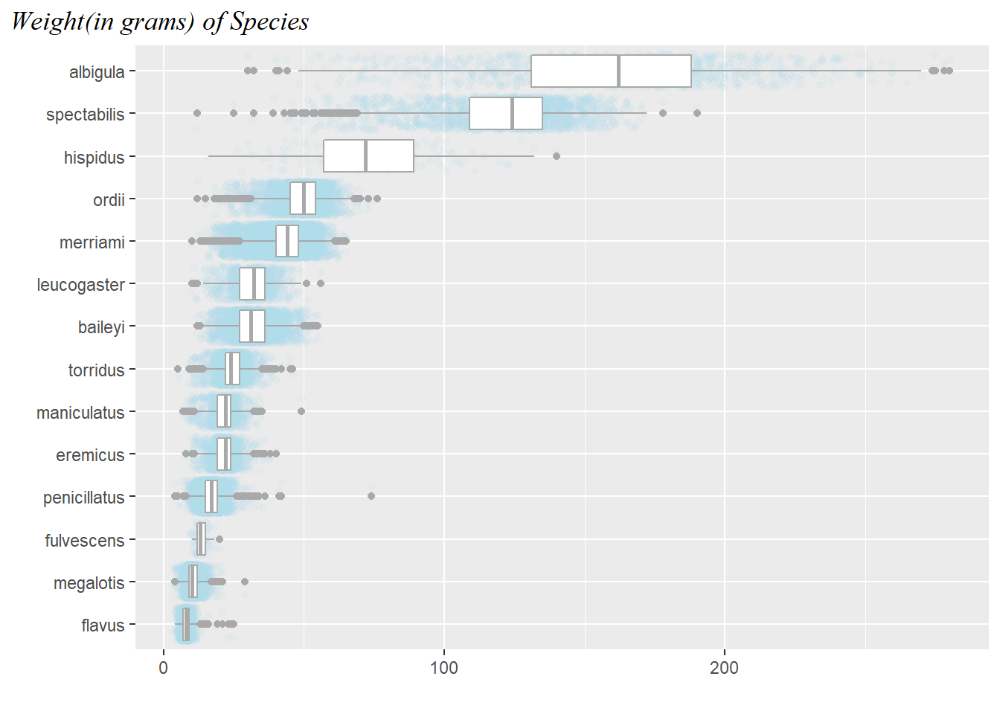
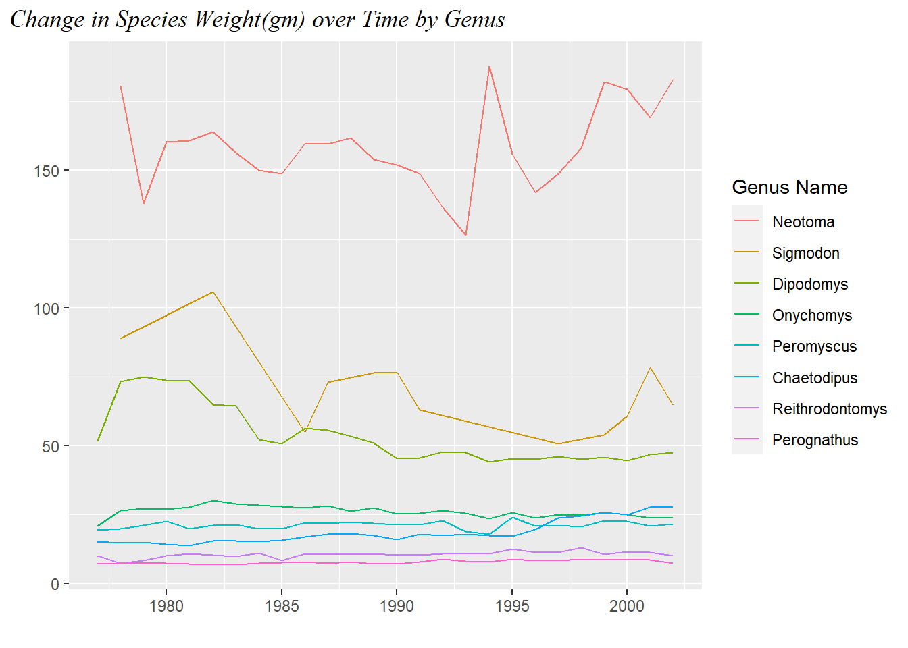
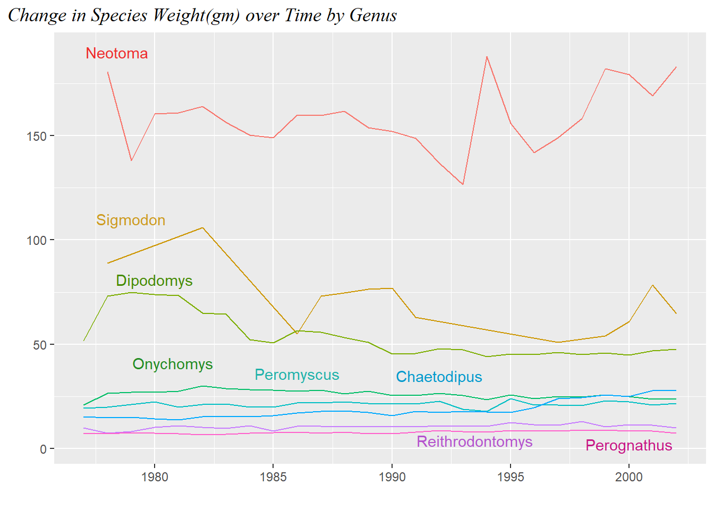
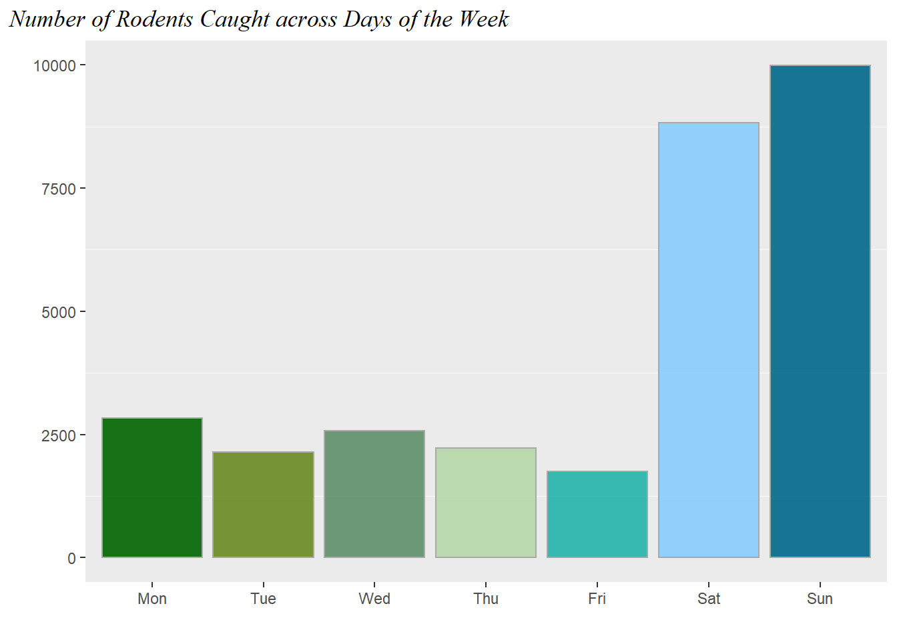
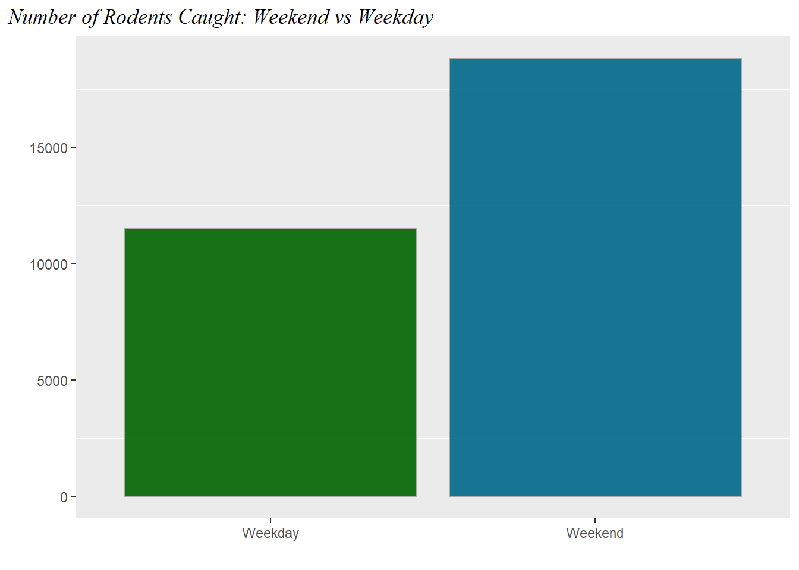

Show code
library(tidyverse)
library(here)
library(lubridate)
surveys <- read_csv(here::here("Labs", "Lab 2", "surveys.csv"))Loaded packages and read in the data
library(tidyverse)
library(here)
library(lubridate)
surveys <- read_csv(here::here("Labs", "Lab 2", "surveys.csv"))Original graph from Lab 2
ggplot(data = surveys
) +
geom_boxplot(mapping = aes(x = weight,
y = species,
),
outlier.shape = NA,
color = "dark gray") +
geom_jitter(mapping = aes(x = weight,
y = species,
), alpha = 0.1,
color = "light blue"
) +
labs( x = "Weight of species in grams",
y = "Species" )
Reordered the box plots so the weights go in descending order.
Condensed axis labels into title so people do not need to tilt their head to read y-axis label and realigned plot title as William Chase suggested. Changed title font.
surveys <-
surveys |>
mutate(species = as.factor(species),
daynum = wday(date)) |>
drop_na()
# daynum for use in section 3
# Source: https://babichmorrowc.github.io/post/changing-fonts-in-rmarkdown-pdfs/
# used for font
# Source: https://www.statology.org/ggplot-title-position/
# used for position shift
ggplot(data = surveys
) +
geom_jitter(mapping = aes(x = weight,
y = fct_reorder(species,
weight)
), alpha = 0.1,
color = "light blue"
) +
geom_boxplot(mapping = aes(x = weight,
y = species),
color = "dark gray") +
theme( plot.title.position = "plot",
plot.title = element_text(vjust = 1,
face = "italic",
family = "serif")) +
labs( title = "Weight(in grams) of Species",
x = " ", y = " ")
1. Create a visualization how weights vary for each genus over the duration of the study.
2. Calculate and plot the mean weight for each year (for each genus).
3. Reorder the lines so the weights go in descending order.
4. Now that you’ve reordered the lines, look at your legend’s label. That’s terrible! Let’s give the legend a new title and move the information from the y-axis to the plot title.
surveyscount <- surveys |> group_by(genus, year) |>
summarize(weight = mean(weight), .groups = "rowwise")
ggplot(data = surveyscount
) +
geom_line(mapping = aes(x = year, y = weight,
color = fct_rev(reorder(genus, weight))
)
) +
theme( plot.title.position = "plot",
plot.title = element_text(vjust = 1,
face = "italic",
family = "serif")) +
labs( title = "Change in Species Weight(gm) over Time by Genus",
x = " ", y = " ", color = "Genus Name")
A variation with the legend layered directly on the plot as Will Chase suggested.
genus_name <- surveys |> distinct(genus, .keep_all = TRUE) |>
arrange(desc(weight))
y_locs <- c(190, 110, 81, 41, 36, 35, 4, 2)
x_locs <- c(1978.4, 1979, 1980, 1980.75, 1986, 1992, 1993.5, 2000)
# Source : http://www.stat.columbia.edu/~tzheng/files/Rcolor.pdf
# for the color names
# Source : https://ggplot2.tidyverse.org/reference/annotate.html
# to understande the annotate() layer
genus_colors <- c("firebrick2", "goldenrod3",
"chartreuse4",
"forestgreen",
"lightseagreen", "deepskyblue3",
"mediumorchid3", "mediumvioletred")
ggplot(data = surveyscount
) +
geom_line(mapping = aes(x = year, y = weight,
color = fct_rev(reorder(genus, weight))
)
) +
annotate("text", x = x_locs, y = y_locs,
label = genus_name$genus,
color = genus_colors) +
theme( plot.title.position = "plot",
plot.title = element_text(vjust = 1,
face = "italic",
family = "serif"),
legend.position = "none") +
labs( title = "Change in Species Weight(gm) over Time by Genus",
x = " ", y = " ", color = "Genus Name")
1. Create a visualization of the number of rodents captured each day of the week.
2. Change the order of the day of the week to go Monday through Sunday.
Colored plot to make it look nicer. Removed the vertical grid lines because they served no purpose
cdPalette_bluegreen <- c("darkgreen", "olivedrab4",
"#5d906b", "#b6d7a8",
"lightseagreen",
"lightskyblue", "deepskyblue4")
# daynum from section 2 code
# Source: https://stackoverflow.com/questions/2678141/how-can-i-suppress-the-vertical-gridlines-in-a-ggplot2-plot
# to remove vertical gridlines
ggplot(data = surveys
) +
geom_bar(mapping = aes(x = fct_shift(fct_reorder(day_of_week,
daynum))
), alpha = 0.9,
fill = cdPalette_bluegreen,
color = "dark gray"
) +
theme( plot.title.position = "plot",
plot.title = element_text(vjust = 1,
face = "italic",
family = "serif"),
panel.grid.major = element_blank()) +
labs( title = "Number of Rodents Caught across Days of the Week",
x = " ", y = " ")
3. Collapse Monday through Friday into a "Weekday" level, and collapse Saturday and Sunday into a "Weekend" level. Plot the number of rodents captured between the two groups.
cdPalette_bluegreen <- c("darkgreen", "deepskyblue4")
ggplot(data = surveys
) +
geom_bar(mapping = aes(x = fct_collapse(day_of_week,
"Weekday" = c("Mon",
"Tue",
"Wed",
"Thu",
"Fri"),
"Weekend" = c("Sat",
"Sun"))
), alpha = 0.9,
fill = cdPalette_bluegreen,
color = "dark gray"
) +
theme(plot.title.position = "plot",
plot.title = element_text(vjust = 1,
face = "italic",
family = "serif"),
panel.grid.major = element_blank()) +
labs( title = "Number of Rodents Caught: Weekend vs Weekday",
x = " ", y = " ")